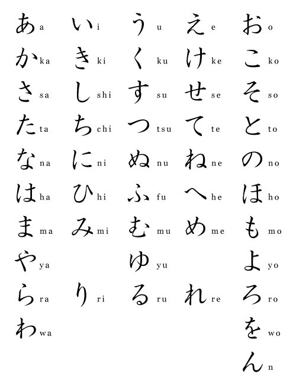

Hiragana
ひらがな

ひらがな
Hiragana is the basic Japanese phonetic alphabet. It represents every sound in the Japanese language. Therefore, you can theoretically write everything in hiragana. However, because Japanese is written with no spaces, this will create nearly indecipherable text.
Hiragana is used along with kanji to write all native Japanese words (including words of Chinese origin). Hiragana is used for verb and adjective endings (okurigana), particles, words that have no kanji, words which are commonly written only in kana, words for which the writer does not know the kanji, and as furigana (hints provided by the writer to the reading of an unfamiliar kanji).
Hiragana can be used to express and write all Japanese words without the use of kanji since hiragana is like an alphabet. If you can’t remember the right kanji for a word, you can just spell it out in hiragana. There are 46 Hiragana to learn. In addition to those 46 hiragana there are some hiragana with different pronunciation.
These basic characters can be modified in various ways. By adding a dakuten marker ( ゛), a voiceless consonant is turned into a voiced consonant: k→g, ts/s→z, t→d, h→b and ch/sh→j (also u→v(u)). For example, か (ka) becomes が (ga). Hiragana beginning with an h (or f) sound can also add a handakuten marker ( ゜) changing the h (f) to a p. For example, は (ha) becomes ぱ (pa).
The combination of some of these hiragana is used to express a few additional sounds used in Japanese. The first character is written in normal size whereas the second character is written a little bit smaller. These combinations are called digraphs.